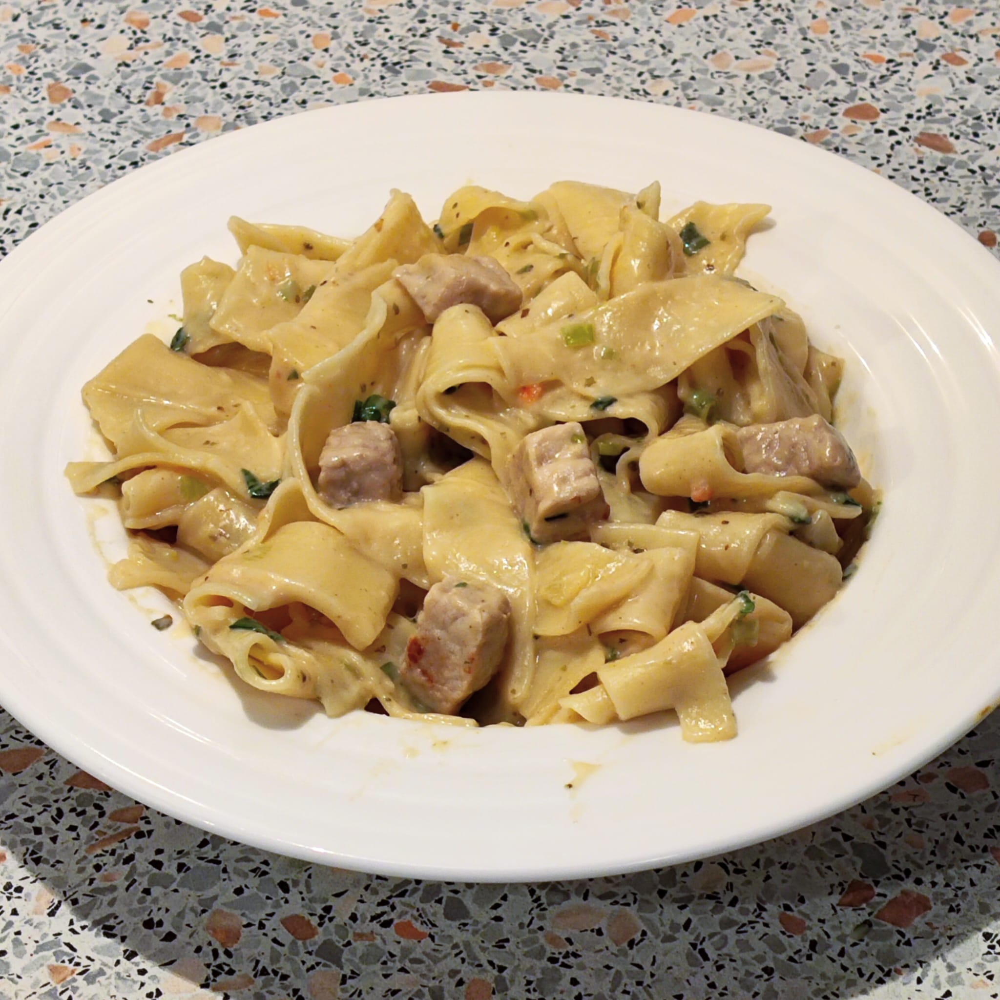

Hähnchengeschnetzeltes mit Bandnudeln

 15 Min.
15 Min.
 simpel
simpel
 06.02.2025
06.02.2025
Zutaten für
| 300 g | Bandnudeln |
| 500 g | Hähnchenburst |
| 1 EL | Butterschmalz |
| 3 | Lauchzwiebeln |
| 100 ml | Sahne |
| Salz & Pfeffer | |
| 1 TL | Majoran |
| 150 ml | Wasser |
| 1 EL | Mehl |
| 1 TL | Gemüsebrühpulver |
Zubereitung
 15 Min.
15 Min.
 Gesamtzeit: 25 Min.
Gesamtzeit: 25 Min.
Die Nudeln nach Packungsanleitung in Salzwasser kochen. Die
Hähnchenbrust in Streifen schneiden und in Butterschmalz anbraten.
Die Lauchzwiebeln klein schneiden und mit der Hähnchenbrust
anbraten, Salz und Gewürze hinzufügen.
Das Wasser mit dem Mehl und der Brühe vermischen und die Sahne
dazugeben, alles miteinander vermischen, in die Pfanne geben und ca.
5 - 8 Minuten köcheln lassen. Danach den Herd ausmachen und
abschmecken.
Rezept erstellt von

Leon